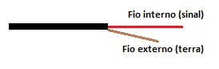

Como fazer um cabo A/V para o Saturn
 :::. Por Gigacom
:::. Por Gigacom
Quem tem um Saturn sabe como custa caro os itens e acessórios desse incrivel console. Um simples cabo A/V, além de dificil pacas de achar, costuma ser vendido à horrores em qualquer lugar. Felizmente existe uma alternativa barata e eficaz de se fazer um cabo A/V para esse console, usando poucos itens.
Para essa tarefa você irá precisar:
1 - Um cabo A/V comum desses utilizados em DVDs, de preferência um de boa qualidade.
2 - Alguns pedaços de fios rigidos. Sempre recomendo utilizar aqueles que se encontram dentro de cabos de rede de computador, por terem uma espessura ideal além não se quebrarem a toa.
3 - Fita isolante.

Material que você irá precisar.
Com o material em mãos, siga a receita abaixo:
1 - Corte os três conectores de uma das pontas do cabo de DVD, e desencape cada fio separando os fios internos. Tome o cuidado para não deixar que esses fios internos entrem em contato um com o outro.
2 - Pegue o cabo de rede, e abra-o. Retire os fios de dentro, pegue quatro fios e corte-os em pedaços de pelo menos 3 centimetros. Desemcape as pontas de cada fio, deixando no máximo 1cm desencapado de um lado, e 5mm do outro.
3 - Pegue as pontas dos cabos desemcapados do cabo de DVD, e una-os à parte desencapada maior (1cm) dos fios de rede da seguinte maneira:
a) Para os cabos de audio (vermelho e branco) una uma ponta do cabo de à ponta interna do cabo de sinal (que fica encapado dentro do cabo). O fio terra de cabo poderá ser cortado, pois não será utilizado.
b) Para o cabo de video (amarelo) é preciso unir um cabo de rede à cada um dos fios internos (sinal e terra), e manter os contatos dele separados.

4 - Após unir os fios, isole cada um com fita isolante, porém é preciso prestar atenção qual fio correspone à outra ponta do cabo.
5 - Hora de conectar as pontas do fio na saída do console. Veja a imagem abaixo, que ilustra como é a saída do Saturn:
Agora é moleza. Coloque cada fio do cabo de rede nos pontos correspondentes na saída do Saturn, observando a imagem acima e o esquema abaixo:
Cabo de video (amarelo): cabo do sinal no ponto nº 10 e do terra no anel que envolve a saída (terra).
Cabo de som: o cabo de som esquerdo (branco) deve ser conectado no ponto de nº 1 e o direito no de nº 2.
Ligue o cabo na TV, ligue o console, e curta agora o seu Saturn com uma imagem melhor e som de primeira.
Acesse o Trombone e comente sobre essa matéria!


O Master System 3 foi mais fatiado que carne de segunda antes de ser moída... tiraram o suporte ao óculos 3D, colocaram uma travinha meio vagabunda para servir de liga/desliga, sumiram com o botão reset e com as saídas A/V... ...